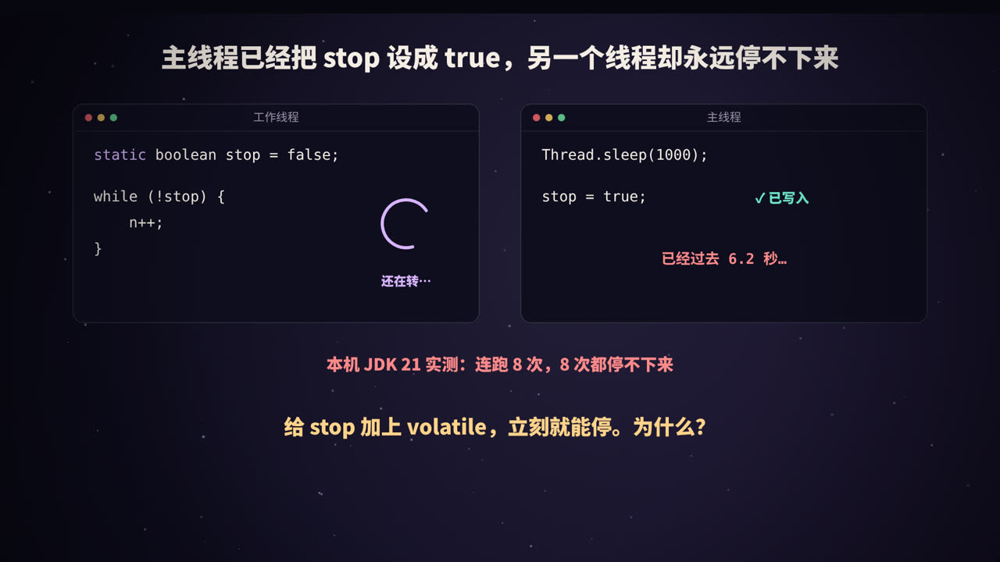
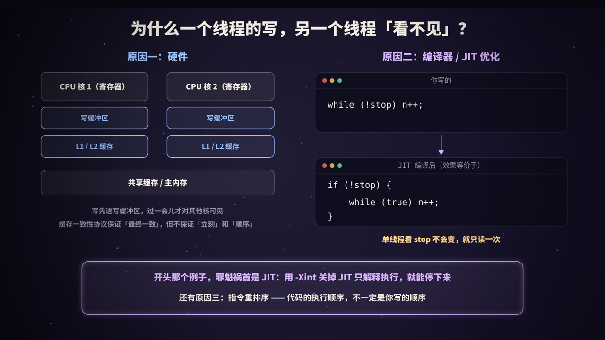
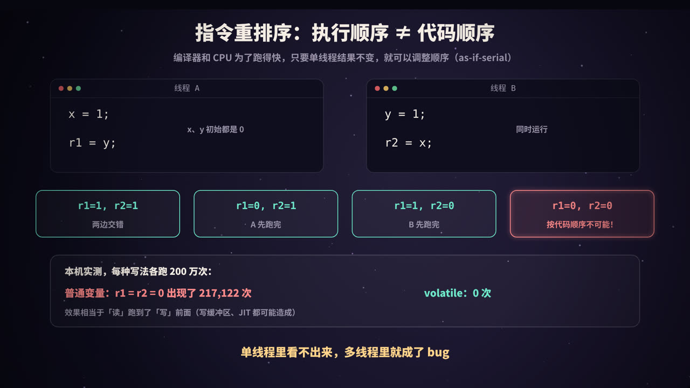
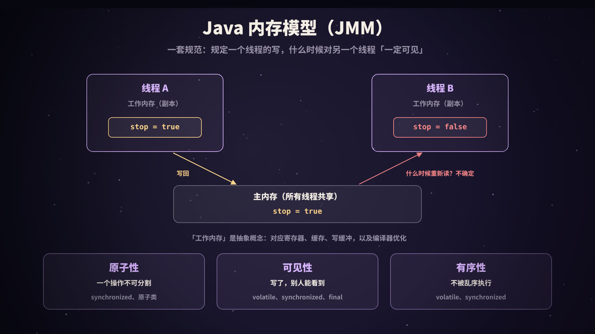
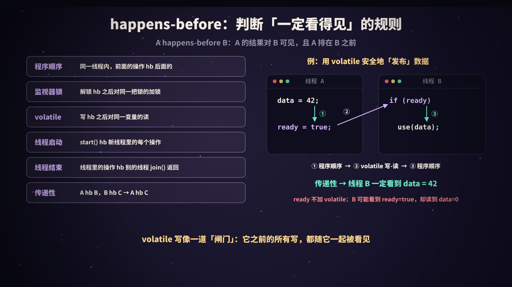
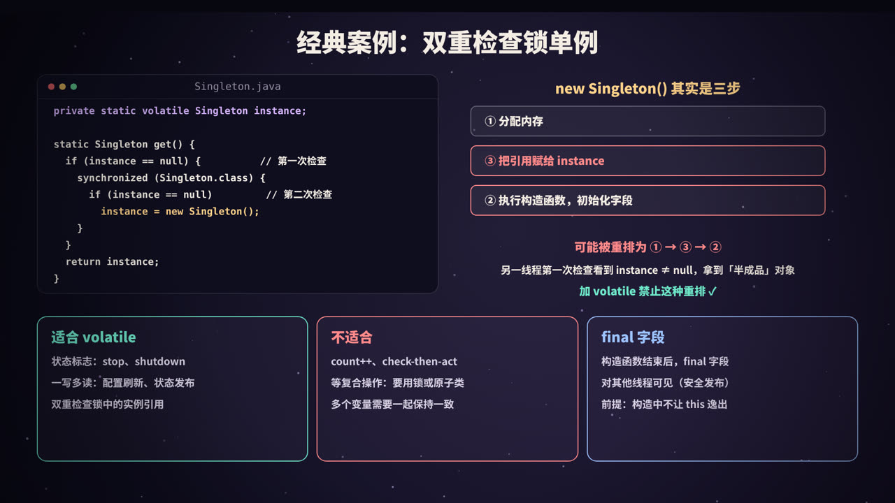

一个停不下来的循环
先看一段代码。工作线程在循环里检查一个标志 stop，主线程等 1 秒后把它设为 true：
static boolean stop = false;
// 工作线程
while (!stop) n++;
// 主线程
Thread.sleep(1000);
stop = true;
按直觉，主线程一改，工作线程下一次检查就会看到 true，然后退出循环。但在我的机器上（JDK 21，HotSpot），连续运行 8 次，工作线程 8 次都停不下来。只要给 stop 加上 volatile，它就能立刻停下。
这一个关键字背后，是并发编程中最容易让人困惑的一块内容：Java 内存模型（Java Memory Model，JMM）。本文回答四个问题：
- 为什么一个线程的写，另一个线程会「看不见」？
- JMM 用什么规则来规定「什么时候一定看得见」？
volatile到底保证了什么，又不保证什么？- 双重检查锁单例为什么必须加
volatile？
本系列《Java 的锁：synchronized、CAS 与 AQS》讲的是「多个线程同时改，怎么不打架」（互斥）；这一篇讲的是另一面：「一个线程改了，别的线程能不能看到、看到的顺序对不对」（可见性与有序性）。
为什么会「看不见」

原因一：硬件的缓存和写缓冲区
CPU 比内存快得多，访问一次主内存要花上百个时钟周期。为此，每个 CPU 核心都有自己的多级缓存（L1、L2），多个核心再共享 L3 和主内存。另外，CPU 执行写操作时，通常不会等写真正进入缓存，而是先放进一个写缓冲区（store buffer），然后马上执行后面的指令。
| 部件 | 是否核心私有 | 对可见性的影响 |
|---|---|---|
| 寄存器 | 是 | 值放在寄存器里，其他核心完全看不到 |
| 写缓冲区 | 是 | 写入暂存在这里，其他核心暂时看不到 |
| L1 / L2 缓存 | 是 | 由缓存一致性协议（如 MESI）在核心间同步 |
| L3 / 主内存 | 共享 | — |
缓存一致性协议保证了多个核心的缓存最终会一致，但它不保证「立刻」，更不保证不同变量之间的「顺序」。在 ARM 等内存模型更弱的处理器上，允许的乱序比 x86 还要多。
原因二：编译器和 JIT 的优化
对于开头那个例子，真正的「罪魁祸首」其实不是 CPU 缓存，而是 JIT 编译器。
JIT 在编译这段热点循环时，看到循环体里没有任何代码会修改 stop，而且 stop 不是 volatile，就认为「单线程语义下它不会变」，于是把读取提到循环外面（循环不变量外提）：
// 你写的
while (!stop) n++;
// JIT 编译后，效果等价于
if (!stop) {
while (true) n++;
}
这样只在进入循环时读一次 stop，之后再也不读了。主线程怎么改，这个循环都不知道。
这个优化对单线程程序完全正确，Java 规范也允许它这么做，因为普通变量从来没有承诺过「对其他线程可见」。
原因三：指令重排序
编译器和 CPU 还可能调整指令的执行顺序，下一节专门讲。
实验：停不下来的循环
public class StopFlag {
static boolean stop = false; // 普通字段
static volatile boolean vstop = false; // volatile 字段
public static void main(String[] args) throws Exception {
// 1. 普通字段做停止标志
Thread t1 = new Thread(() -> {
long n = 0;
while (!stop) n++; // 空转，一直读 stop
System.out.println(" [普通] 工作线程看到了 stop=true，循环了 " + n + " 次");
});
t1.setDaemon(true); // 守护线程：停不下来也不妨碍 JVM 退出
t1.start();
Thread.sleep(1000); // 让循环先跑一会儿，JIT 有时间编译它
stop = true;
System.out.println("[普通] 主线程已把 stop 设为 true");
t1.join(2000); // 最多等 2 秒
System.out.println("[普通] 2 秒后工作线程还活着吗？" + t1.isAlive());
// 2. volatile 字段做停止标志
Thread t2 = new Thread(() -> {
long n = 0;
while (!vstop) n++;
System.out.println(" [volatile] 工作线程看到了 vstop=true，循环了 " + n + " 次");
});
t2.setDaemon(true);
t2.start();
Thread.sleep(1000);
vstop = true;
System.out.println("[volatile] 主线程已把 vstop 设为 true");
t2.join(2000);
System.out.println("[volatile] 2 秒后工作线程还活着吗？" + t2.isAlive());
}
}
用 JDK 21 运行 java -Dstdout.encoding=UTF-8 StopFlag.java，某一次的输出：
[普通] 主线程已把 stop 设为 true
[普通] 2 秒后工作线程还活着吗？true
[volatile] 主线程已把 vstop 设为 true
[volatile] 工作线程看到了 vstop=true，循环了 2747199115 次
[volatile] 2 秒后工作线程还活着吗？false
普通字段的版本，等了 2 秒工作线程仍然在跑（它是守护线程，所以程序还能正常退出）；volatile 版本立刻停了下来。我在本机连续运行了 8 次，普通版本 8 次都没有停下。
再加上 -Xint 参数（关闭 JIT，只用解释器执行）运行同一个程序：
[普通] 主线程已把 stop 设为 true
[普通] 工作线程看到了 stop=true，循环了 110127131 次
[普通] 2 秒后工作线程还活着吗？false
[volatile] 主线程已把 vstop 设为 true
[volatile] 工作线程看到了 vstop=true，循环了 109722230 次
[volatile] 2 秒后工作线程还活着吗？false
关掉 JIT 后，普通版本也停下来了（循环次数也少了一个数量级，因为解释执行慢得多）。这说明在这个例子里，问题出在 JIT 的优化上，而不是 CPU 缓存：x86 的缓存一致性协议会很快把新值同步过去，但 JIT 编译后的代码根本不再去读它。
注意：这类问题不保证每次都能复现。它取决于 JVM 版本、JIT 是否已经编译了这段循环、循环体里有什么代码（比如在循环里调用
System.out.println或Thread.sleep，往往会让 JIT 不再做这种外提，看起来「又正常了」）、CPU 架构等。但「这次能停下来」不代表代码是对的——没有 volatile 或锁，规范就不保证你能看到。
指令重排序：执行顺序 ≠ 代码顺序

as-if-serial
为了提高性能，编译器（javac 很少做，主要是 JIT）和 CPU 都会调整指令的执行顺序，比如：
- 编译器把两条没有依赖关系的语句调换位置，或者把读操作提前、写操作合并；
- CPU 乱序执行，先执行后面已经准备好数据的指令；
- 写缓冲区让「写」比后面的「读」更晚被其他核心看到，效果上就是「读」跑到了「写」前面。
它们都遵守同一条原则：as-if-serial，即在单线程看来，结果和按代码顺序执行完全一样。所以单线程程序永远感觉不到重排序。但多线程程序观察的是另一个线程的执行顺序，这个保证就不成立了。
实验：r1 和 r2 能同时为 0 吗
经典的测试：x、y 初始都是 0，两个线程同时执行：
| 线程 A | 线程 B |
|---|---|
x = 1; |
y = 1; |
r1 = y; |
r2 = x; |
如果每个线程都按代码顺序执行，无论怎样交错，至少有一个线程的写会发生在另一个线程的读之前，可能的结果只有 (1,1)、(0,1)、(1,0)。r1 = r2 = 0 是不可能的——除非发生了重排序。
下面的程序把这个测试重复 200 万次，统计 (0,0) 出现了多少次。为了让两个线程尽量「同时」执行每一轮，用两个 volatile 进度变量让它们步调一致；volatile 版本的读写通过 VarHandle 的 setVolatile / getVolatile 实现（数组元素不能直接声明为 volatile）。
import java.lang.invoke.MethodHandles;
import java.lang.invoke.VarHandle;
import java.util.concurrent.CyclicBarrier;
/** 经典的「存储缓冲」测试：两个线程各写一个变量、再读另一个变量 */
public class Reorder {
static final int N = 2_000_000;
static int[] x, y, r1, r2;
static volatile int pa, pb; // 两个线程的进度，用来让它们步调一致
static final VarHandle AA = MethodHandles.arrayElementVarHandle(int[].class);
static long run(boolean useVolatile) throws Exception {
x = new int[N]; y = new int[N]; r1 = new int[N]; r2 = new int[N]; pa = 0; pb = 0;
CyclicBarrier start = new CyclicBarrier(2);
Thread a = new Thread(() -> {
await(start);
for (int i = 0; i < N; i++) {
while (pb < i) Thread.onSpinWait(); // 等对方也走到第 i 轮
if (useVolatile) { AA.setVolatile(x, i, 1); r1[i] = (int) AA.getVolatile(y, i); }
else { x[i] = 1; r1[i] = y[i]; }
pa = i + 1;
}
});
Thread b = new Thread(() -> {
await(start);
for (int i = 0; i < N; i++) {
while (pa < i) Thread.onSpinWait();
if (useVolatile) { AA.setVolatile(y, i, 1); r2[i] = (int) AA.getVolatile(x, i); }
else { y[i] = 1; r2[i] = x[i]; }
pb = i + 1;
}
});
a.start(); b.start(); a.join(); b.join();
long both0 = 0;
for (int i = 0; i < N; i++) if (r1[i] == 0 && r2[i] == 0) both0++;
return both0;
}
static void await(CyclicBarrier b) { try { b.await(); } catch (Exception e) { throw new RuntimeException(e); } }
public static void main(String[] args) throws Exception {
System.out.println("线程 A: x = 1; r1 = y; 线程 B: y = 1; r2 = x;");
System.out.println("如果严格按代码顺序执行，r1 和 r2 不可能同时为 0\n");
for (int round = 1; round <= 3; round++) {
System.out.printf("第 %d 轮（各 %,d 次） 普通读写：r1 = r2 = 0 出现 %,d 次 volatile 读写：出现 %,d 次%n",
round, N, run(false), run(true));
}
}
}
本机（2 核 x86 虚拟机，JDK 21）的输出：
线程 A: x = 1; r1 = y; 线程 B: y = 1; r2 = x;
如果严格按代码顺序执行，r1 和 r2 不可能同时为 0
第 1 轮（各 2,000,000 次） 普通读写：r1 = r2 = 0 出现 32,488 次 volatile 读写：出现 0 次
第 2 轮（各 2,000,000 次） 普通读写：r1 = r2 = 0 出现 217,122 次 volatile 读写：出现 0 次
第 3 轮（各 2,000,000 次） 普通读写：r1 = r2 = 0 出现 194,529 次 volatile 读写：出现 0 次
「不可能」的结果出现了十几万次；换成 volatile 读写后一次都没有。具体次数和机器、负载有关，每次运行都不同。从结果上看不出这次重排是 JIT 造成的还是 CPU 写缓冲区造成的，但对程序员来说没有区别：没有同步，就不能假设另一个线程看到的顺序和你写的顺序一致。
一个小插曲：这个程序的第一个版本没有让两个线程步调一致，结果普通读写也是 0 次——因为一个线程总是远远跑在另一个前面，两边的读写根本没有「同时」发生过。并发测试很难写对，严肃的场景请使用 OpenJDK 的 jcstress 工具。
Java 内存模型（JMM）

为什么需要一个「模型」
不同 CPU 的内存行为差别很大：x86 只允许「写后读」这一种重排，ARM、POWER 允许的乱序多得多；不同 JIT 做的优化也不同。如果 Java 程序的并发行为依赖于具体的硬件，「一次编写，到处运行」就成了空话。
JMM 是一套规范（定义在 Java 语言规范第 17 章，现行版本来自 JDK 5 引入的 JSR-133），它规定：在什么条件下，一个线程的写对另一个线程一定可见。JVM 负责在每种平台上，用合适的编译限制和 CPU 指令实现这些保证；程序员只需要按规范写代码，不需要关心底层是 x86 还是 ARM。
主内存与工作内存
JMM 用一个抽象的模型来描述：
- 所有共享变量都存在主内存中；
- 每个线程有自己的工作内存，保存了它用到的变量的副本；
- 线程对变量的读写都在工作内存中进行，什么时候和主内存同步，没有特别约束的话是不确定的。
注意，「工作内存」是一个抽象概念，不是真实存在的某块内存。它对应的是寄存器、CPU 缓存、写缓冲区，以及编译器优化（比如把变量放在寄存器里不再重新读）带来的种种效果。
三大特性
| 特性 | 含义 | 反例 | 怎么保证 |
|---|---|---|---|
| 原子性 | 一个操作要么全做完，要么完全没做，中间状态不会被别的线程看到 | count++ 丢失更新 |
synchronized、Lock、原子类 |
| 可见性 | 一个线程修改了共享变量，其他线程能看到新值 | 停不下来的循环 | volatile、synchronized、Lock、final |
| 有序性 | 在其他线程看来，操作按预期的顺序发生 | r1 = r2 = 0 |
volatile、synchronized、Lock |
关于原子性有一个细节：Java 规范保证对 int、boolean、引用等类型的单次读写是原子的；但对非 volatile 的 long 和 double，规范允许 JVM 把一次 64 位写拆成两次 32 位写（JLS 17.7），另一个线程可能读到「一半新、一半旧」的值。声明为 volatile 后，long / double 的读写就是原子的了。不过现代 64 位 JVM 实际上都是原子读写的。
synchronized 能同时保证三个特性：同一时刻只有一个线程执行（原子性）；解锁前把修改刷出、加锁后重新读取（可见性）；临界区内的代码不会被重排到临界区之外（有序性）。volatile 只保证后两个，这正是下一节的重点。
volatile 做了什么
保证一：可见性
- 对 volatile 变量的写，会让这次写（以及之前的所有写，见后文 happens-before）对之后读这个变量的线程可见；
- 对 volatile 变量的读，每次都会真正去读最新的值，JIT 不能把它缓存在寄存器里，也不能把它提到循环外面。
这就是开头的循环加上 volatile 就能停下来的原因。
保证二：禁止重排序（内存屏障）
JMM 通过内存屏障（memory barrier / fence）来限制重排序。按照 JSR-133 给编译器实现者的指南（JSR-133 Cookbook）中的保守策略：
| 位置 | 插入的屏障 | 作用 |
|---|---|---|
| volatile 写之前 | StoreStore | 前面的普通写，必须先于这次 volatile 写完成 |
| volatile 写之后 | StoreLoad | 这次 volatile 写，必须先于后面的读写完成（最重的一种屏障） |
| volatile 读之后 | LoadLoad + LoadStore | 后面的普通读写，不能提前到这次 volatile 读之前 |
可以简单记成：volatile 写之前的操作不能往后挪，volatile 读之后的操作不能往前挪。这正好构成了「发布-获取」的语义：写线程先准备好数据、最后写 volatile 标志；读线程先读 volatile 标志、再去读数据。
具体到 CPU 上，实际生成的指令取决于架构。x86 本身的内存模型较强（称为 TSO），只会出现「写后读」的重排，所以只有 StoreLoad 需要真正的指令：HotSpot 在 volatile 写之后加一条带 lock 前缀的指令（如 lock addl），它会等写缓冲区清空后才继续执行，其他几种屏障在 x86 上不需要额外指令。ARM 等平台上，则需要使用专门的屏障指令或带获取/释放语义的读写指令。
从 JDK 9 开始，
VarHandle还提供了比 volatile 更细粒度的访问模式：getAcquire/setRelease（只保证单向顺序）和getOpaque/setOpaque（只保证不被优化掉）。它们主要用于编写 JUC 这类底层并发库，普通业务代码用 volatile 就足够了。
不保证：原子性
这是 volatile 最常见的误用。volatile int count 之后，count++ 仍然是读-改-写三步：两个线程可以同时读到同一个最新值，各自加 1，再先后写回，其中一次更新照样丢失。volatile 只保证「读到的是最新值」，不保证「读和写之间没有别人插进来」。
import java.util.concurrent.atomic.AtomicInteger;
public class VolatileCount {
static volatile int vcount = 0;
static final AtomicInteger acount = new AtomicInteger();
public static void main(String[] args) throws Exception {
Thread[] ts = new Thread[4];
for (int round = 1; round <= 3; round++) {
vcount = 0; acount.set(0);
for (int i = 0; i < 4; i++) {
ts[i] = new Thread(() -> {
for (int j = 0; j < 1_000_000; j++) { vcount++; acount.incrementAndGet(); }
});
ts[i].start();
}
for (Thread t : ts) t.join();
System.out.printf("第 %d 轮：volatile int = %,d AtomicInteger = %,d （期望 4,000,000）%n", round, vcount, acount.get());
}
}
}
输出：
第 1 轮：volatile int = 2,786,860 AtomicInteger = 4,000,000 （期望 4,000,000）
第 2 轮：volatile int = 3,249,620 AtomicInteger = 4,000,000 （期望 4,000,000）
第 3 轮：volatile int = 2,086,256 AtomicInteger = 4,000,000 （期望 4,000,000）
volatile 版本每轮都少了几十万到近 200 万次。需要原子的复合操作时，用 AtomicInteger（CAS）、LongAdder 或加锁，原理见本系列《Java 的锁》。
volatile 与 synchronized 对比
| volatile | synchronized | |
|---|---|---|
| 作用对象 | 变量 | 方法、代码块 |
| 原子性 | 只保证单次读 / 写 | 保证整个临界区 |
| 可见性 | 保证 | 保证 |
| 有序性 | 保证（禁止相关重排） | 保证（临界区作为整体） |
| 是否阻塞线程 | 不会 | 抢不到锁会阻塞 |
| 开销 | 读几乎和普通读一样；写有一次屏障的开销 | 无竞争时较低，有竞争时较高 |
happens-before：判断「一定看得见」的规则

定义
JMM 没有直接用「屏障」「缓存」这些硬件概念来描述规则，而是定义了一个更抽象的关系：happens-before（先行发生，简称 hb）。
如果操作 A happens-before 操作 B，那么 A 的结果对 B 可见，并且 A 在 B 之前发生（在 B 看来）。
反过来说：如果两个操作之间没有 happens-before 关系，JVM 就可以随意重排它们，一个线程的写也不一定对另一个线程可见。多个线程访问同一个变量、至少有一个是写、而它们之间又没有 happens-before 关系，这种情况叫数据竞争（data race）。
注意，happens-before 不等于「时间上先发生」。它是一种可见性保证：时间上先发生的写，如果没有 hb 关系，后面的读也不一定能看到。
常用规则
| 规则 | 内容 |
|---|---|
| 程序顺序规则 | 同一个线程中，前面的操作 hb 后面的操作 |
| 监视器锁规则 | 对一个锁的解锁 hb 之后对同一个锁的加锁 |
| volatile 变量规则 | 对一个 volatile 变量的写 hb 之后对同一个变量的读 |
| 线程启动规则 | Thread.start() hb 新线程中的每一个操作 |
| 线程终止规则 | 线程中的所有操作 hb 其他线程从该线程的 join() 返回（或 isAlive() 返回 false） |
| 中断规则 | 调用 interrupt() hb 被中断线程检测到中断 |
| 传递性 | A hb B，B hb C，那么 A hb C |
JUC 中的工具类也在文档中给出了 happens-before 保证，比如：放入并发集合的操作 hb 从集合中取出的操作；向线程池提交任务 hb 任务开始执行；Future 中任务的完成 hb get() 返回；CountDownLatch.countDown() hb 对应的 await() 返回。
用传递性安全地发布数据
最有用的是把几条规则用传递性串起来：
int data; // 普通变量
volatile boolean ready; // volatile 变量
// 线程 A
data = 42; // ①
ready = true; // ② volatile 写
// 线程 B
if (ready) { // ③ volatile 读，读到了 true
use(data); // ④ 一定看到 42
}
- ① hb ②：程序顺序规则；
- ② hb ③：volatile 变量规则（③ 读到了 ② 写入的值）；
- ③ hb ④：程序顺序规则；
- 传递性：① hb ④，所以线程 B 一定能看到
data = 42。
这说明 volatile 写像一道「闸门」：写 volatile 之前的所有写，都会随着它一起对读到这个 volatile 值的线程可见，哪怕 data 本身不是 volatile。
如果 ready 不是 volatile，② 和 ③ 之间就没有 hb 关系，线程 B 可能看到 ready = true，却读到 data = 0（因为 ① 和 ② 被重排，或者 data 的新值还没对 B 可见）。
这条链也解释了为什么「用 synchronized 保护写，却不保护读」是错的：监视器锁规则要求解锁和加锁是同一把锁，读线程不加锁，就没有 hb 关系，可见性就没有保证。
双重检查锁单例

问题出在 new 上
懒加载单例的常见写法是双重检查锁（Double-Checked Locking，DCL）：
public class Singleton {
private static Singleton instance; // 没有 volatile：有问题！
public static Singleton getInstance() {
if (instance == null) { // 第一次检查：不加锁，避免每次都同步
synchronized (Singleton.class) {
if (instance == null) { // 第二次检查：防止重复创建
instance = new Singleton();
}
}
}
return instance;
}
}
看起来很完美，问题出在 instance = new Singleton() 这一行。它编译后的字节码是（用 javap -c 查看 instance = new NewObj()）：
0: new #7 // class NewObj
3: dup
4: invokespecial #9 // Method "<init>":()V
7: putstatic #10 // Field instance:LNewObj;
概念上是三步：
- 分配内存（
new）； - 执行构造函数，初始化字段（
invokespecial <init>）； - 把引用赋给
instance（putstatic）。
第 2 步和第 3 步之间没有数据依赖，在单线程看来先赋值再初始化结果是一样的，所以 JIT 或 CPU 可以把它们重排成 1 → 3 → 2。
线程 B 的第一次检查没有加锁，它和线程 A 的写之间没有任何 happens-before 关系，所以完全可能看到「引用已经赋值、构造函数还没执行完」的对象，拿到的字段是 0 或 null。这类 bug 极难复现，一旦发生又非常诡异。
正确写法
给 instance 加上 volatile：对 instance 的写是 volatile 写，构造函数中的写不能被重排到它之后；线程 B 读 instance 是 volatile 读，根据 happens-before 规则，读到非空引用时一定能看到完整初始化的对象。这个修复从 JDK 5（JSR-133 加强了 volatile 的语义）开始才有效，更早的版本中，DCL 即使加了 volatile 也是错的。
import java.util.Set;
import java.util.concurrent.ConcurrentHashMap;
import java.util.concurrent.CountDownLatch;
public class Singleton {
private static volatile Singleton instance; // 关键：volatile
private final int[] config;
static int constructed = 0; // 构造次数（只在锁内修改）
private Singleton() {
constructed++;
config = new int[]{1, 2, 3}; // 模拟一些初始化工作
}
public static Singleton getInstance() {
Singleton local = instance; // 只读一次 volatile，减少开销
if (local == null) { // 第一次检查：不加锁
synchronized (Singleton.class) {
local = instance;
if (local == null) { // 第二次检查：加锁后再确认
instance = local = new Singleton();
}
}
}
return local;
}
public static void main(String[] args) throws Exception {
int threads = 16;
Set<Integer> ids = ConcurrentHashMap.newKeySet();
CountDownLatch go = new CountDownLatch(1);
Thread[] ts = new Thread[threads];
for (int i = 0; i < threads; i++) {
ts[i] = new Thread(() -> {
try { go.await(); } catch (InterruptedException e) {}
Singleton s = getInstance();
if (s.config.length != 3) System.out.println("看到了未初始化完的对象！");
ids.add(System.identityHashCode(s));
});
ts[i].start();
}
go.countDown(); // 16 个线程同时开抢
for (Thread t : ts) t.join();
System.out.println(threads + " 个线程拿到的不同实例个数 = " + ids.size() + "，构造函数执行次数 = " + constructed);
}
}
输出：
16 个线程拿到的不同实例个数 = 1，构造函数执行次数 = 1
这里用一个局部变量 local 暂存 instance，是一个常见的小优化：已经初始化之后，每次调用只读一次 volatile 变量，而不是两次。
需要说明：这个测试只能验证「只创建了一个实例」，无法证明「不加 volatile 一定会出错」，也无法证明「加了 volatile 一定不出错」——重排序导致的半成品对象问题出现概率极低，在 x86 上更是很难观察到。正确性要靠 JMM 的规则来推理，而不是靠测试跑通。
更简单的替代方案
大多数情况下，有比 DCL 更简单、同样线程安全的懒加载写法：
// 1. 静态内部类（Holder 模式）：利用类加载机制保证线程安全和懒加载
public class Singleton {
private Singleton() {}
private static class Holder {
static final Singleton INSTANCE = new Singleton(); // 第一次访问 Holder 时才初始化
}
public static Singleton getInstance() { return Holder.INSTANCE; }
}
// 2. 枚举：最简洁，还能防止反射和反序列化破坏单例
public enum Config {
INSTANCE;
}
JVM 保证类的初始化过程是线程安全的（JLS 12.4.2），并且初始化完成的结果对所有之后访问这个类的线程可见。（这两段是参考写法，原理已有 JLS 保证，本文没有单独为它们编写测试。）
volatile 的适用场景与 final 字段
适合用 volatile 的场景
满足下面两个条件时，可以用 volatile 代替锁：
- 对变量的写操作不依赖当前值（不是
count++、x = x * 2这种读-改-写），或者只有一个线程会写； - 该变量不需要和其他变量一起保持某种约束（比如
low <= high）。
典型场景：
| 场景 | 例子 |
|---|---|
| 状态标志 | volatile boolean running，用于停止线程、关闭服务 |
| 一写多读 | 定时任务刷新配置，把新配置对象赋给一个 volatile 引用，业务线程读取 |
| 安全发布 | 准备好数据后写一个 volatile 标志 / 引用，读者通过它拿到完整数据 |
| 双重检查锁 | 单例的实例引用 |
JUC 中大量使用 volatile：AQS 的 state、ConcurrentHashMap 中的节点值和链表指针、FutureTask 的状态、线程池的运行状态等，配合 CAS 实现无锁的读和原子的更新。
不适合的场景
count++、if (x == null) x = ...这类检查再执行（check-then-act）的复合操作；- 多个变量需要作为一个整体保持一致；
这时需要用锁或原子类。另外，volatile 修饰引用时，只保证引用本身的可见性，不保证引用指向的对象内部字段的线程安全。volatile List<String> list 不会让 list.add() 变得线程安全。最佳实践是：给 volatile 引用赋值一个不可变对象，修改时创建新对象整体替换（写时复制）。
final 字段的安全发布
除了 volatile 和锁，final 字段也有特殊的内存语义（JLS 17.5）：
对象的构造函数执行结束后，其他线程只要通过这个对象的引用看到了它，就一定能看到 final 字段被正确初始化的值，以及 final 字段引用的对象在构造函数中被初始化的状态，即使这个引用是通过数据竞争获得的。
这就是不可变对象天然线程安全的原因：String、Integer 等类的字段都是 final，可以放心在线程之间传递。
这个保证有一个前提：不能让 this 在构造函数中逸出。比如在构造函数中把 this 注册到某个监听器列表、或者启动一个使用 this 的线程，其他线程就可能在构造函数结束前拿到这个对象，final 的保证就失效了。
普通（非 final）字段没有这个保证：如果对象是通过数据竞争发布的（比如赋值给一个普通的静态字段），其他线程可能看到字段的默认值。
高频面试题速答
Q：volatile 有什么作用？ 保证可见性（写对之后的读可见，JIT 不能缓存该变量）和有序性（通过内存屏障禁止相关的指令重排序），不保证复合操作的原子性。
Q：volatile 能保证 count++ 线程安全吗？
不能。count++ 是读-改-写三步，volatile 只保证每次读到最新值，两个线程仍然可能读到同一个值、各自加 1 后写回，造成丢失更新。应使用 AtomicInteger、LongAdder 或加锁。
Q：什么是 JMM？为什么需要它？ Java 内存模型是 Java 语言规范第 17 章定义的一套规则，规定多线程下一个线程的写何时对另一个线程可见。它屏蔽了不同 CPU 和编译器在缓存、重排序上的差异，让并发程序的行为在所有平台上一致。
Q：什么是 happens-before？举几条规则。 如果 A happens-before B，A 的结果对 B 可见且 A 排在 B 之前。规则包括：程序顺序规则、监视器锁规则（解锁 hb 后续对同一锁的加锁）、volatile 规则（写 hb 后续对同一变量的读）、线程启动和终止规则、传递性等。
Q：volatile 的底层是怎么实现的？ JVM 在 volatile 读写前后插入内存屏障，禁止编译器和 CPU 做相关的重排。以 x86 为例，volatile 写之后会生成一条带 lock 前缀的指令，起到 StoreLoad 屏障的作用，确保写缓冲区中的数据在后续读操作之前对其他核心可见；volatile 读在 x86 上不需要额外指令，但同样会限制编译器的重排和优化。
Q：双重检查锁为什么要加 volatile？
instance = new Singleton() 包含分配内存、初始化、赋值引用三步，后两步可能被重排。没有 volatile，另一个线程可能在第一次检查时看到非空引用，却拿到尚未初始化完成的对象。volatile 禁止了这种重排，并建立了 happens-before 关系。
Q：volatile 和 synchronized 有什么区别？ volatile 只能修饰变量，保证可见性和有序性，不保证原子性，不会阻塞线程；synchronized 修饰方法或代码块，三者都保证，但会导致线程阻塞。volatile 是更轻量的同步手段，只适用于状态标志、一写多读等简单场景。
总结
- 多线程下「看不见」的来源有三个：CPU 缓存与写缓冲区、编译器 / JIT 优化（比如把循环里的读提到循环外）、指令重排序；单线程感觉不到，因为它们都遵守 as-if-serial；
- JMM 是一套跨平台的规范，用主内存与工作内存的抽象描述多线程的内存行为，关心原子性、可见性、有序性；
- volatile 保证可见性和有序性（内存屏障），但不保证原子性：
volatile count++照样丢失更新； - happens-before 是判断可见性的依据：程序顺序、监视器锁、volatile、线程启动与终止，再加上传递性。volatile 写之前的所有写，都会随它一起对读到它的线程可见；
- 双重检查锁的实例引用必须加 volatile，否则可能拿到半成品对象；更简单的选择是 Holder 模式或枚举；
- final 字段在构造完成后对其他线程可见，是不可变对象线程安全的基础，前提是
this不在构造中逸出； - 「我跑了很多次都没问题」不能证明并发代码正确，要按 JMM 的规则推理。
参考资料
- The Java Language Specification, Java SE 21 Edition, Chapter 17: Threads and Locks（§17.4 Memory Model，§17.5 final Field Semantics，§17.7 Non-Atomic Treatment of double and long）；§12.4.2 Detailed Initialization Procedure.
- JSR-133: Java Memory Model and Thread Specification Revision.
- The JSR-133 Cookbook for Compiler Writers.
- The "Double-Checked Locking is Broken" Declaration.
- 《Java 并发编程实战》（Java Concurrency in Practice），第 3 章「对象的共享」、第 16 章「Java 内存模型」.
- JEP 193: Variable Handles；Java SE 21 API 文档：
java.lang.invoke.VarHandle、java.util.concurrent包说明中的 Memory Consistency Properties. - Intel 64 and IA-32 Architectures Software Developer's Manual, Volume 3A：Memory Ordering 相关章节.
- OpenJDK jcstress：The Java Concurrency Stress tests.